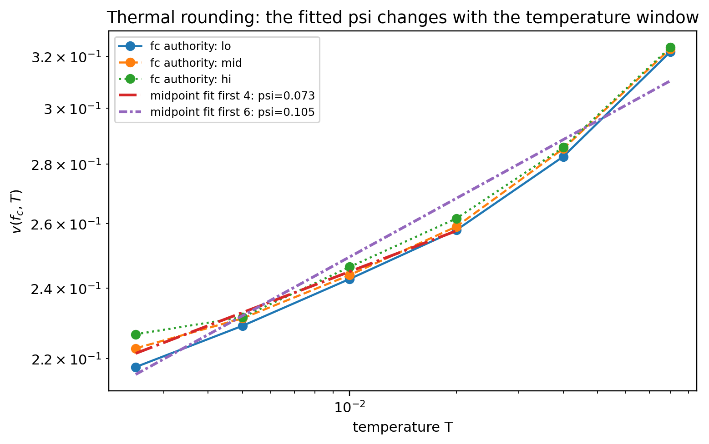
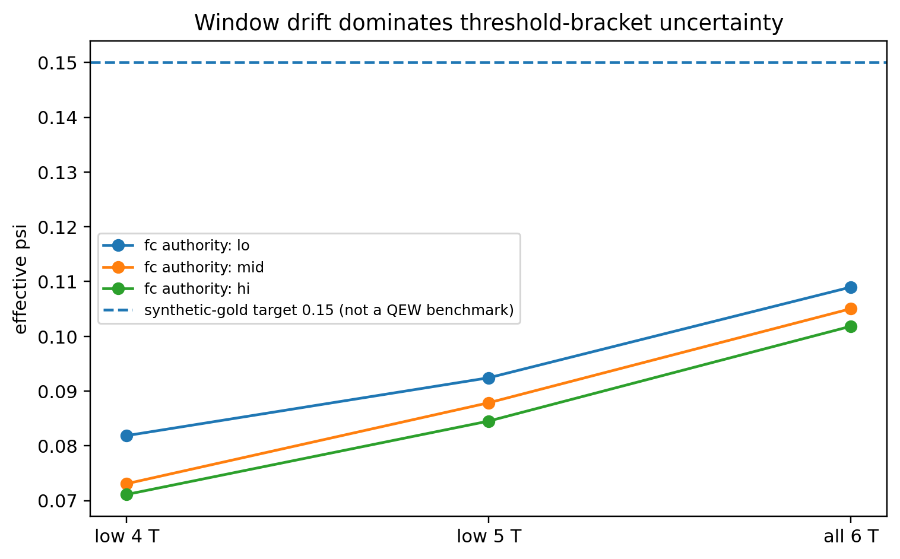
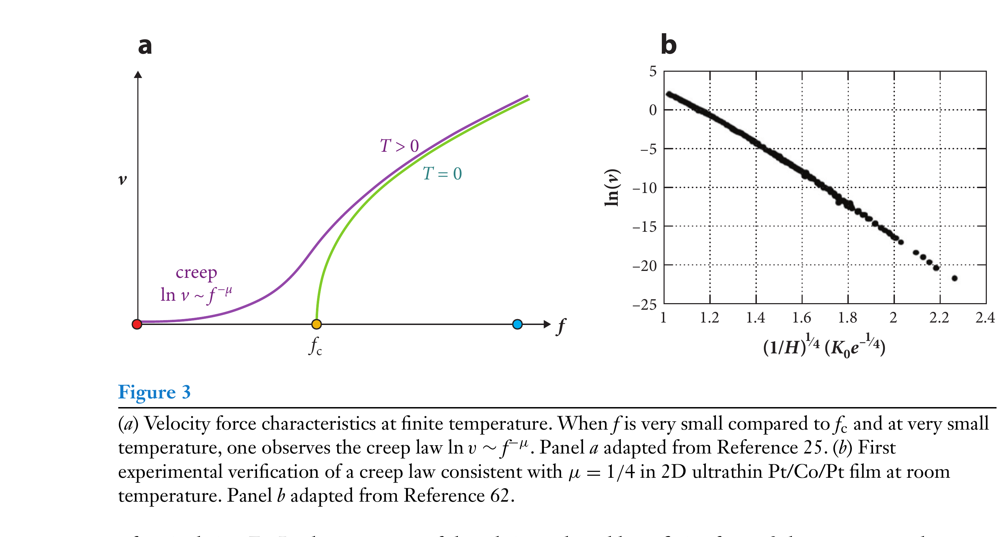
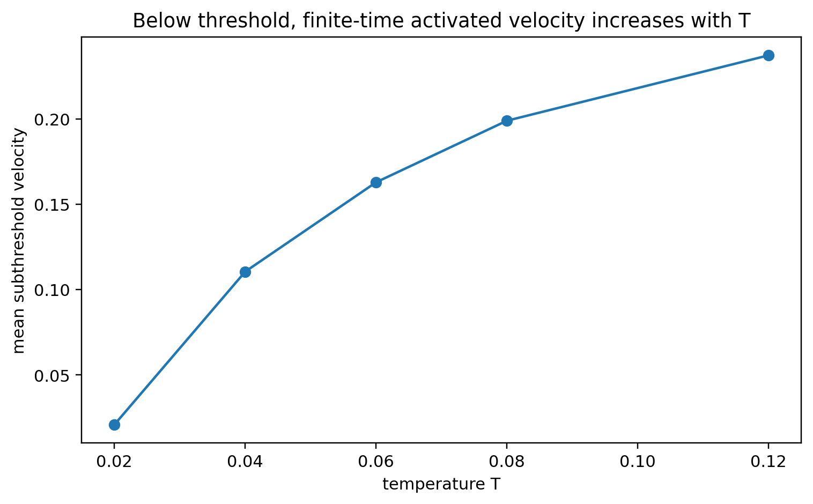
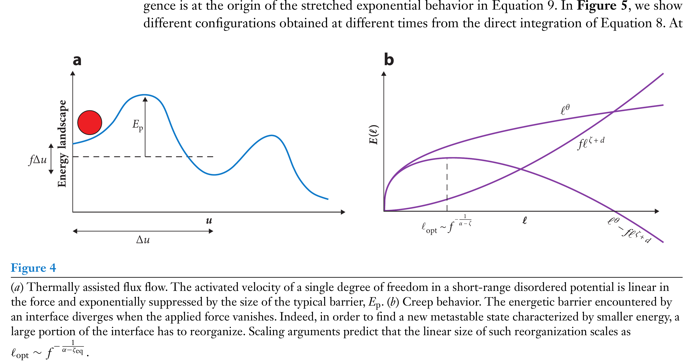
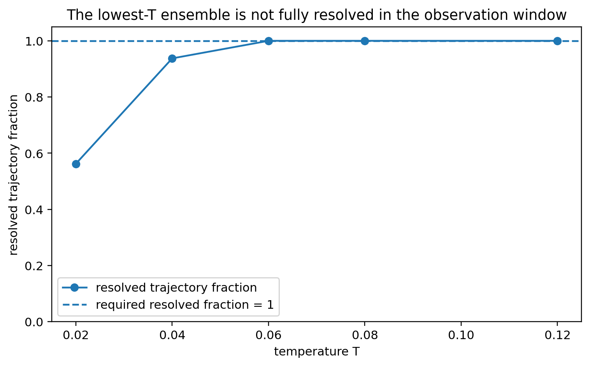
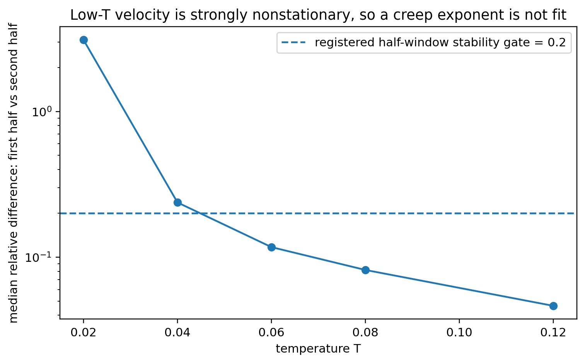

Learning Sliding Ferroelectricity / Reproduction Lab / Lesson 12
真实 simulation plot论文原图完整裁切thermal rounding ≠ creep
同样是有限温：thermal rounding 和 creep 是两条不同证据链
L12 旧版最严重的问题不是图模糊，而是把错误的 PRE Fig.6 当作 thermal rounding 证据。现在完全重置：先用正确的 v–f regime map 定位 f=fc 的 thermal rounding；再用 2021 creep review 的完整原图讨论 f<fc 的 activated motion。 两部分各自用真实代码图验收，绝不混成一个“有限温指数”。
1 · 总地图先在 v–f 图上分清 depinning、rounding、creep。
2 · f=fc画 v(T)，检查 ψ 对 temperature window 是否稳定。
3 · f<fc看 activated motion，但先检查低温轨迹是否真的解析。
4 · 才谈 μ低温 asymptotic 没解析，就禁止 creep-law fit。
0 · 正确的 transport map：三种关系不要混

depinning · T=0
f>fc
v∼(f−fc)β
thermal rounding
f=fc
v∼Tψ
creep
f<fc, T>0
thermally activated transport
因此 L12 不是“再拟一个指数”。 ψ 要在 threshold 上研究 temperature scaling；μ 属于低-drive creep law，变量、极限和收敛要求都不同。
1 · thermal rounding：我们真的画 v(fc,T)
v(fc,T) ∼ Tψ

这张图和公式的变量是直接对齐的。 但“看起来能画直线”仍不够；ψ 必须对 temperature fit window 稳定。
2 · ψ 的真正 gate：换温度窗还能不能得到同一个指数？

| authority | ψ low4 | ψ low5 | ψ all6 |
|---|---|---|---|
| f− | 0.081861 | 0.092425 | 0.108981 |
| midpoint | 0.073079 | 0.087862 | 0.105033 |
| f+ | 0.071115 | 0.084517 | 0.101828 |
数值实现先过两道 gold test。 Brownian noise normalization PASS；synthetic ψ=0.15 用同一 regression 恢复 0.150920 / 0.150587 / 0.150878。
THERMAL-ROUNDING WINDOW GATE = NOT PASSED。 midpoint low4→all6 drift=0.031953，略高于预注册 0.030 gate；bootstrap 的 drift 95%=[0.029133,0.034808] 也跨在 gate 附近。因此 UNIVERSAL PSI CLAIM = NOT AUTHORIZED。
3 · creep 的论文原图：低驱动 finite-T motion 是另一件事

这张图给出的关键不是“阈值以下 v 非零”这么简单，而是一个低力、低温、长时间的 asymptotic transport regime。我们的短时数值若连最低温 trajectory 都没可靠走出 pinning landscape，就没有资格直接拟 μ。
4 · 我们的 subthreshold run：先只问“热激活运动解析出来了吗？”

5 · 为什么最低温数据还不够资格进入 creep asymptotic？



| T | mean v | resolved fraction | median half-window diff |
|---|---|---|---|
| 0.020 | 0.020971 | 0.5625 | 3.102542 |
| 0.040 | 0.110550 | 0.9375 | 0.237538 |
| 0.060 | 0.162843 | 1.0000 | 0.117292 |
| 0.080 | 0.198881 | 1.0000 | 0.081750 |
| 0.120 | 0.237164 | 1.0000 | 0.046381 |
LOW-T CREEP ASYMPTOTIC RESOLVED = NO。 预注册的 resolved-motion rule 要求 fraction=1 且 median half-window diff<0.2；最低温两项都失败。因此 CREEP-LAW / μ CLAIM = NOT AUTHORIZED。
6 · L12 的最终边界
FINITE-T ROUNDING OBSERVED。 在 sample threshold 附近，velocity 随 T 系统增加；noise normalization 与 synthetic ψ pipeline 都已独立验证。
ASYMPTOTIC EXPONENTS REMAIN OPEN。 ψ 对 temperature window 尚未稳定；低温 subthreshold trajectories 也没有充分解析出 creep asymptotic。正确结论是“看见有限温效应，但指数证据链未闭合”，而不是硬报 ψ 或 μ。